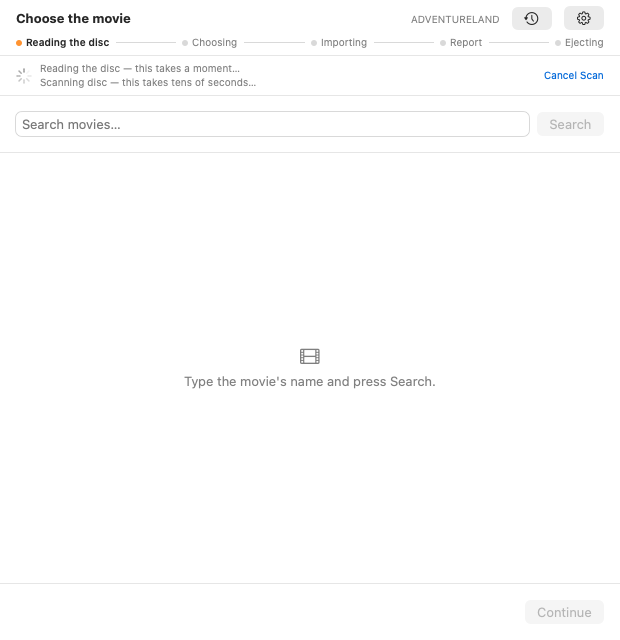
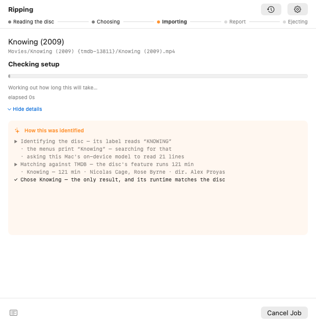
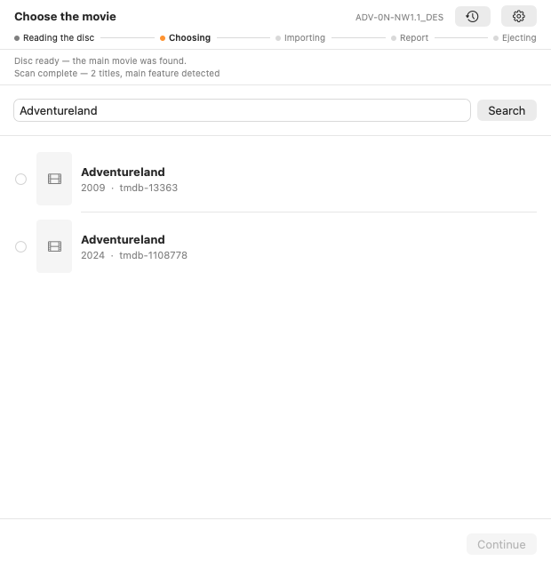
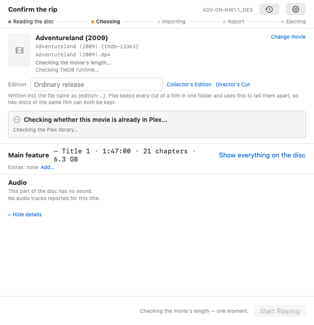
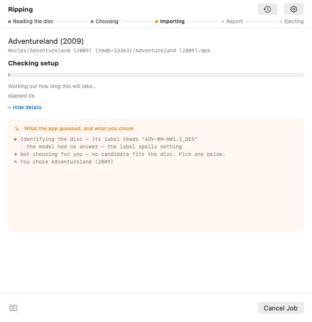
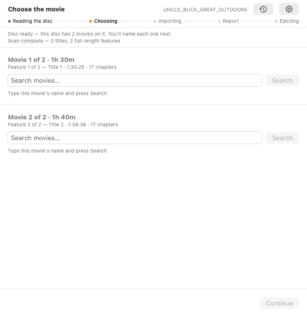

Rendered from the app's real views driven by real controller state, so each picture is a screen the app can actually reach. Highlighted cards carry an open design question. Click any image for full size.
Regenerate with
./run-remote-tests.sh gordon ScreenshotHarnessTests/everyScreenRendersToAPNG,
then Tools/build-screen-review.py.
The resting state. Nothing is in the drive and the app has nothing to say yet.
Look atWhether an idle Plex host should show more than this — the last job's one-line summary is the only history here.
On screen forIndefinite — until a disc goes in.

The disc has been seen and HandBrake is scanning it. The app is about to try to identify the film on its own.
Look atThe one-line scan strip. This is where Smart Import's evidence begins to appear and there is no panel to hold it yet.
On screen forTens of seconds — as long as the scan takes.
Smart Import matched the film from the disc's label and menus. With automatic ripping on, this screen starts the job by itself after a short pause.
Look atTHE KEY SCREEN FOR THE USER'S COMPLAINT. All the identification evidence is here, and it is replaced by the Ripping step seconds later. Is the pause long enough, and is the evidence legible before it goes?
On screen forSeconds — then it advances on its own.

The encode is running. The evidence panel exists so the reasoning stays on screen for the forty minutes the encode takes.
Look atWhether the evidence panel is big enough to be read, and whether the progress block and the panel are fighting for the same space.
On screen forTwenty to sixty minutes.
The disc's label is unusable (here the real one: ADV-0N-NW1.1_DES) so the app refuses to guess and hands the decision over.
Look atWhether it is clear WHY the app could not identify it, and whether the search field is obviously the next thing to do.
On screen forUntil the user types something.

The user searched for “Adventureland” themselves. The credits line under each row is what makes two same-titled films tellable apart.
Look atWhether the recommendation is visible enough, and whether a single obvious match still needs a click.
On screen forUntil the user picks a row.

The user did the work of identifying the disc, picked the film, and the app moves straight on.
Look atTHE USER'S SPECIFIC ASK: after taking manual steps, they want a moment to see the match and the recommendation confirmed. Right now this screen can pass in a second.
On screen forSeconds — arguably too few, given the user just did the work.

The evidence panel now records both halves: what the app guessed, and what the user chose. Before #0154 the heading claimed the app had identified it.
Look atThe heading change, and whether “✎ You chose …” is distinguishable enough from the app's own lines.
On screen forTwenty to sixty minutes.
With automatic ripping OFF, a film already in the library stops here and offers “Replace the Existing File”.
Look atWhether the existing copy is described well enough to decide against — name, size, and where it is.
On screen forUntil the user decides.
With automatic ripping ON, the disc is ejected so the line keeps moving. Before #0153 this happened in total silence — the tray just opened.
Look atNEW SCREEN. Is this the right amount of text? Does it need an action (Rip anyway / Show in Plex)? Does it stay long enough?
On screen forUntil the next disc goes in.
The successful ending. The disc has been ejected and the file is in the library.
Look atTHE USER'S OTHER COMPLAINT: this screen loses most of the useful detail the Ripping screen had. Should the evidence panel survive into Done?
On screen forUntil the next disc, or indefinitely.
The eject ladder is running. On joe's USB drive this can take minutes and six attempts, because loginwindow dissents while the screen is locked.
Look atWhether a multi-minute eject needs more than “Ejecting…” — on joe it really does take that long.
On screen forSeconds to several minutes.

The disc holds two films. Both search boxes are deliberately blank: the volume label is UNCLE_BUCK_GREAT_OUTDOORS, and prefilling that whole string returns 0 results and looks broken.
Look atTHE KEY SCREEN: is it obvious there are two films and that each needs naming? Are the blocks distinguishable by runtime alone, with no poster and no title?
On screen forUntil the user names at least one film.
The user has searched for and picked Uncle Buck for the 1h 40m feature. The other block is still waiting.
Look atDoes the named block read as settled, and the unnamed one as outstanding? Is it clear which film this pass will actually rip?
On screen forUntil the second film is named, or Start is pressed.